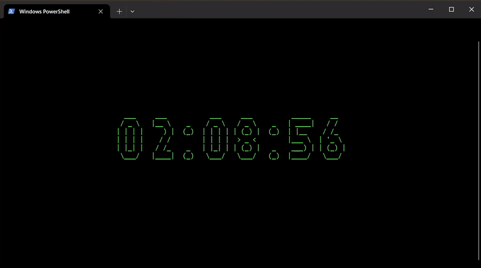

Kana CLI is an application that teaches you Hiragana and Katakana characters.
My future plans include adding basic vocabulary learning.
A C++ Digital Clock made using ASCII ART (compatible with Windows & Unix-like systems)
A Paint application made in CPP